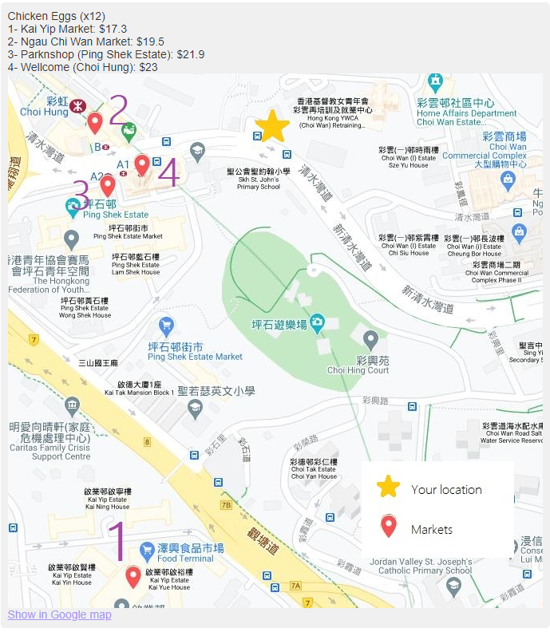
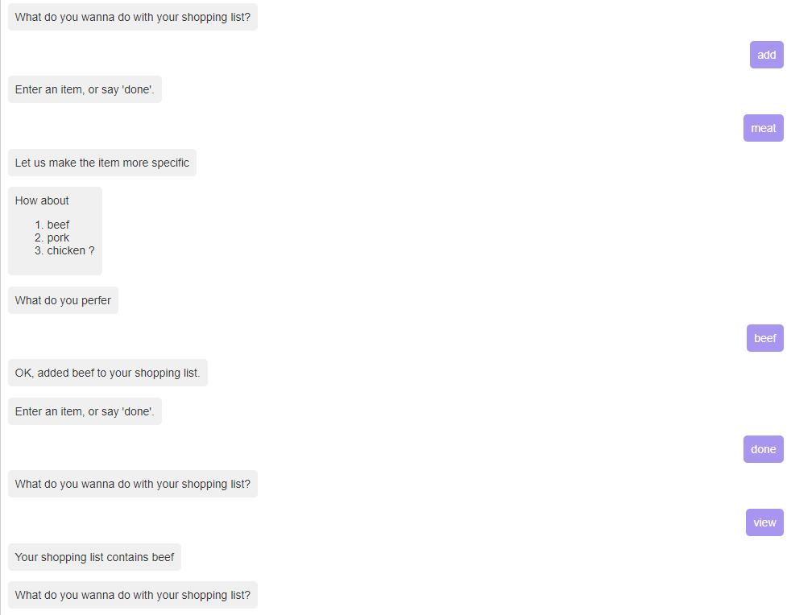
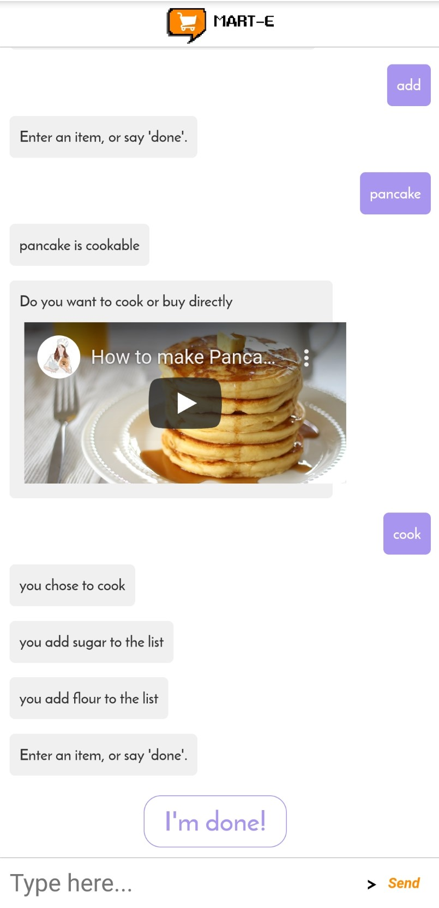
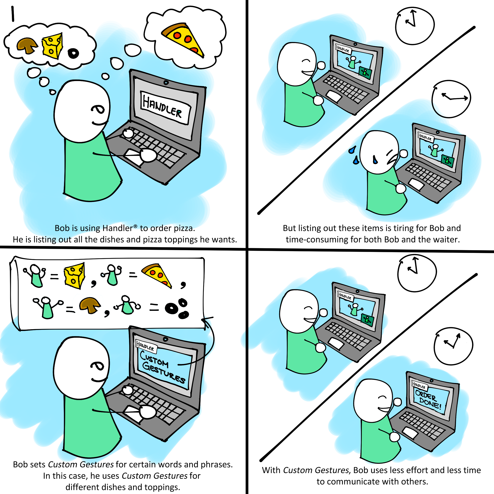

Project 2 :Designing a Chat box app
Project Description: This project aims to design a Chat box app for the target user to build up a communication.
Goals
I come from Darkness Will Arise. We are going to design MART-E, which is a chat box for users so that
1. They can identify what they want to buy.
2. They can know where can buy the items.
3. They can buy cheap and high quality goods without much efforts.
4. They can seek assistance when they get lost.
With these visions, we hope MART-E can help the target audience to have better experience on purchasing goods.
learning and execution process
Empathize
Brainstorm
In order to understand the need of customers, we observe customers from those possible locations to purchase food: ie supermarket, Huge scale warehouse, wet market, and night market.
| Location | Observation | example |
|---|---|---|
| Supermarket | - The map is separated into multiple sectors in term of different catorigories - It gives a general idea of the location of each category without identifying the exact place of each item. - Users need to find their goods from many sub-columns Hence, it is hard to find a specific item solely by looking in that map | Wellcome,Parknshop |
| Huge scale warehouse | - The map is separated into multiple sectors in term of different catorigories - The store is very large that customers may get lost in the store. | Costco | Wet market | - The floor plan layout in wet markets lacks graphical presentation - In a wet markets,stores selling the same type of goods may open in different locations. - In order to save memory, customers may spend much time on exploring the whole market and comparing the quality and price. | Central Market ,tranditional markets in Hong Kong | Night market | - It does not have any map or layout to guide customers. - Stores are clustered and the user may be blocked by others when finding what they want. -Each store does not have a clear list to show what they buy, meaning customers have to go inside each store when looking for a specific item. | Ladies' Market |
From the obervation, we found that for people who are familiar with the location, they may know the cheapest and nearest way to buy items.However, they may have the up-to-dated information about goods as the price of item may vary everyday. It would be great if there are a price comparsion to save their effect and time. For people who seldom buy goods and not familiar with the location, they may need to spend extra time finding the goods they need. More importantly, they may pay more to buy the same products with poor quality. They need a tool to guide them to buy what they need. According to Asking for Help: Men vs. Women, it turns out that at least 44% of population tends to not seek any help when lost. We really need a method foe customers so that they are more willing to seek help
Interpret
POV
In order to understand our target users and their need, We constructe a Point-Of-View based on the customer's view.

Ideate
After we identified the insight the users may face when going to buy goods, we have set certain goals (listed above in the Goals section). Idea that included in our current project
| Feature | Usage | Interface |
|---|---|---|
| Price comparsion | 1.Show the up-dated prices and the distance for reference 2.Users can compare these information to make decision |
 |
| Shopping list | 1.Add items inside the shopping list 2. Indentify what you really need |  |
| Cookbook | 1.Pop out when users add a recipe in shopping list. 2. Add the food or ingredients in your shopping list. |  |
| Suggestion | 1.Check the shopping list and match with the cookbook to see if user can buy other thing to cook a recipe. | --- |
Verify
Storyboard
Using MART-E, we believe that our target audience can buy their items in a smart way: they don't need much time to get a cheap and high quality goods. We drew a storyboard to demonstrate the situation, which helps us to understand the complete process of MART-E. As a receiver:

As a sender:
Prototype
My own contributions
In project 2, I am in charge of 2 duties: use javascript to build up a "identify what user need" and "delete item from list". I also build up a function to check if items have been added in the shopping list or not. Apart from the technical part, I draw the map of the imaginary wet market:Beenedict Dried Mango Wet Market.
Personal Reflection
Throughout the entire project 2, - It gives me another chance to apply design process in project, which make me have a better understanding on it. - I have hand-on experience in using javascript to build up a chat box app. - I have learned to make use of botkit to design our own chat box app, which can interact with user automically. - I have better understanding on javascript coding. - The project has strengthened the knowledge regarding the design process and the ability to do javascript coding. Apart from technical part, - In order to make the conversation informative and interesting, I pay more attention on thinking of the conversation, which make me understand more about the users. - We need to team up to finish the whole project: separating duty and cooperate with other teammate in term of the coding is never an easy work. It provides me a hand-on experience to cope with the problem with a team.